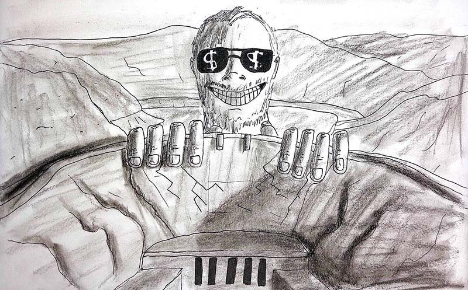

Taylor Dies
2023 | Video
Description:
Power, greed, and the patriarchy
Alex, Sol, Tahj, and Taylor as themselves
Muzzle flashes and Taylor dam drawing drawn by Tahj
Camera and editing by Eli
Music distortions by Eli except for Arlan Vale by Blue Dot Sessions (www.sessions.blue).
Notes and extras: 
The weird frequencies and musical distortions were created using a feedback loop on an analog audio mixer. A mic and keyboard were plugged into the mixer. The keyboard provided a repetitive beat, while I tapped on the mic or made odd noises into it.
Much care was put into creating the degraded "2007 Cell Phone Video". I wanted there to be some shutter warp, remembering it being pretty apparent on old camera phones. The only method I found required the video to be high frame rate (300fps or so), which was done with an online AI tool. The effect was finished in After Effects … don't remember what all was done. Nothing exciting. The resulting video was heavily compressed, then recorded off a monitor using an XP-era webcam. I had to shine a flashlight towards the camera slightly off-frame for it to hold a decent framerate, otherwise it'd fall into a low framerate "low light mode".